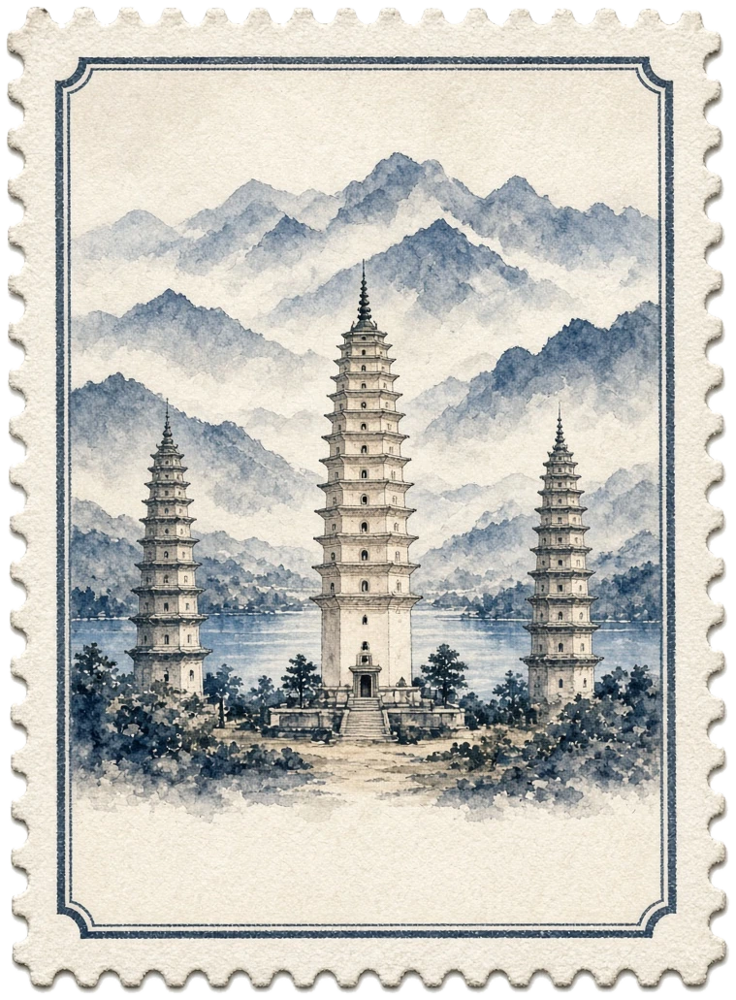

TRAVEL JOURNAL2026
— 18 —

a new friend

No plans. Just the mountain, the lake, and a lot of sky.

— 19 —


cosmos, everywhere

· wind off the lake
· a lamb that would not sit still
· the peak turning gold
· a lamb that would not sit still
· the peak turning gold

CHINA1.20

FIG. 05 — CANGSHAN · ERHAI